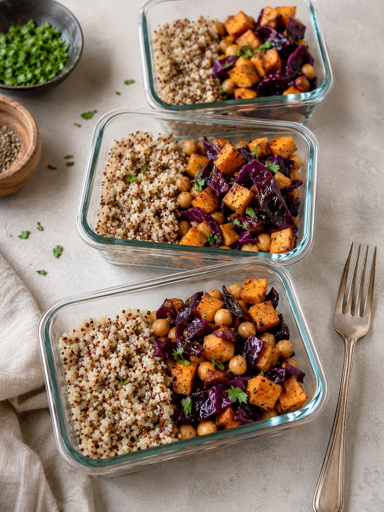
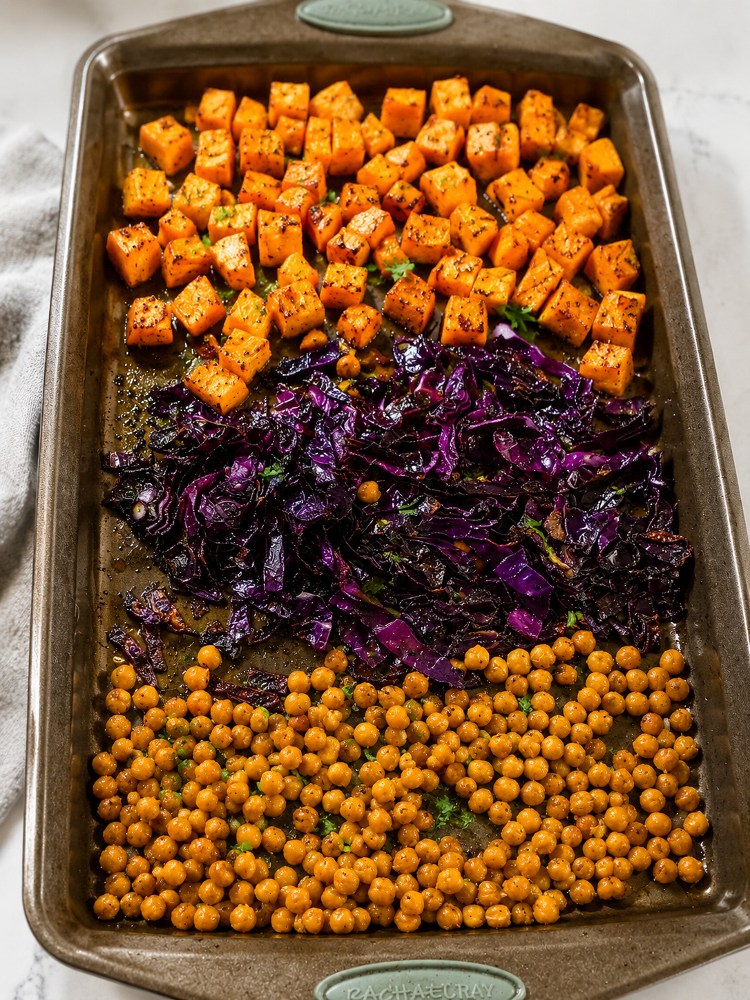

From the kitchen
Curried sweet potato & chickpea sheet pan bowls
One pan, one small pot, minimal cleanup, maximum flavor

Why this one made the rotation
I wanted a meal prep recipe that didn't turn my kitchen into a disaster zone. Between roasting vegetables, cooking a grain, and making a sauce, most "easy" meal prep recipes still leave me with four pans and a sink full of dishes by the end. This one solves that. Everything except the quinoa goes on a single sheet pan, and the quinoa just needs a small pot running in the background. That's it.
It's also just genuinely delicious, not "healthy food you tolerate" delicious. The curry powder gets a little caramelized on the sweet potatoes, the edges of the cabbage crisp up, and the chickpeas turn golden and slightly crunchy. Fair warning: if your coworkers see this show up at lunch, they will look at their own sad desk salad and start asking questions.
Why it works for runners
- Sweet potatoes bring back the carbs and glycogen a hard run burns through
- Chickpeas add plant-based protein and fiber to keep you full
- Quinoa is a complete protein and pairs well with the spices here
- Turmeric and ginger in the curry blend have some anti-inflammatory properties, which never hurts after a long run
Ingredients (4 servings)
- 2 large sweet potatoes, cut into bite-sized cubes
- 1 small head of red cabbage, roughly chopped
- 2 cans chickpeas, drained, rinsed, and patted dry
- 1 cup quinoa (dry)
- 3 Tbsp olive oil, divided
- 2 Tbsp curry powder
- 1 tsp garlic powder
- Salt and pepper, to taste
- Fresh parsley or cilantro, chopped, for topping
Instructions
- Preheat oven to 400°F. Line a large sheet pan with parchment paper or foil for easy cleanup.
- Start your quinoa cooking on the stovetop according to package directions. It'll finish around the same time as the sheet pan.
- Spread the sweet potato cubes, chopped cabbage, and dried chickpeas across the sheet pan in their own sections rather than mixing them together. This keeps the cook times manageable and makes it easy to season each one properly.
- Drizzle everything with olive oil, then sprinkle the curry powder, garlic powder, salt, and pepper over the top. Toss each section separately with your hands so everything gets coated.
- Roast for 25 minutes, then pull the pan out and give everything a toss. Return to the oven for another 10-15 minutes, until the sweet potatoes are fork-tender, the cabbage has crisped at the edges, and the chickpeas are golden.
- Divide the quinoa between bowls or meal prep containers, then top with the roasted sweet potatoes, cabbage, and chickpeas. Finish with a sprinkle of fresh parsley or cilantro.
A few notes from making this a bunch of times
- Dry the chickpeas well. Pat them down with a paper towel before they go on the pan. Wet chickpeas steam instead of crisping up.
- Keep sections separate. Cabbage cooks faster than sweet potato, so having them in their own zones on the pan means you can pull cabbage early if it's browning too fast without disturbing everything else.
- This keeps well. I've had leftovers hold up fine in the fridge for 4 days, and it reheats nicely in the microwave, or eats just as well cold straight out of the container.
- Add a sauce if you want one. A drizzle of plain yogurt with lemon juice or a simple tahini-lemon mix takes this from great to fantastic, though it's plenty flavorful without it.

Full disclosure: I did have ice cream for dessert after this. I'm not claiming to be 100% healthy all the time, just trying to eat well most of the time and not overthink it. This bowl makes that pretty easy.